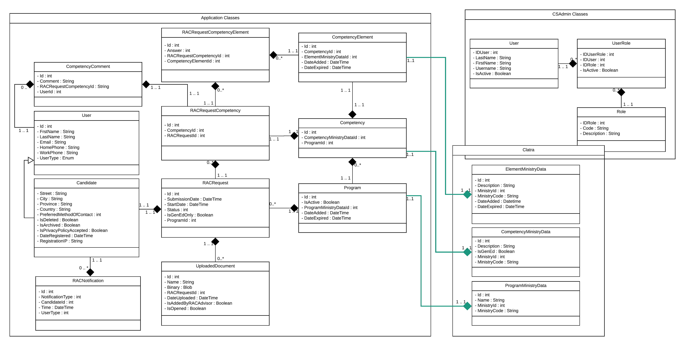
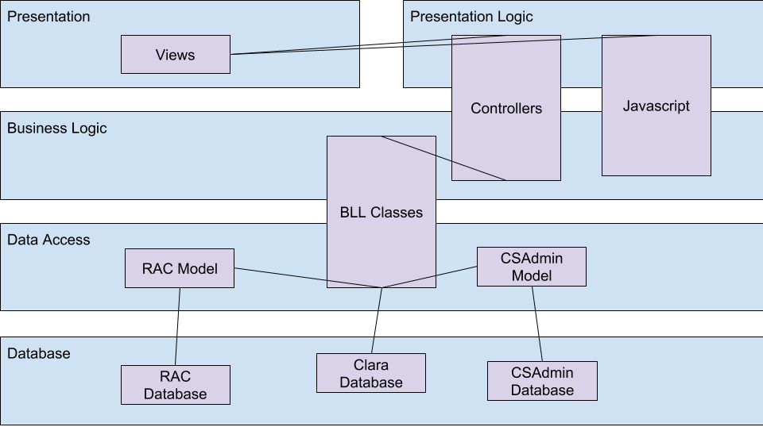
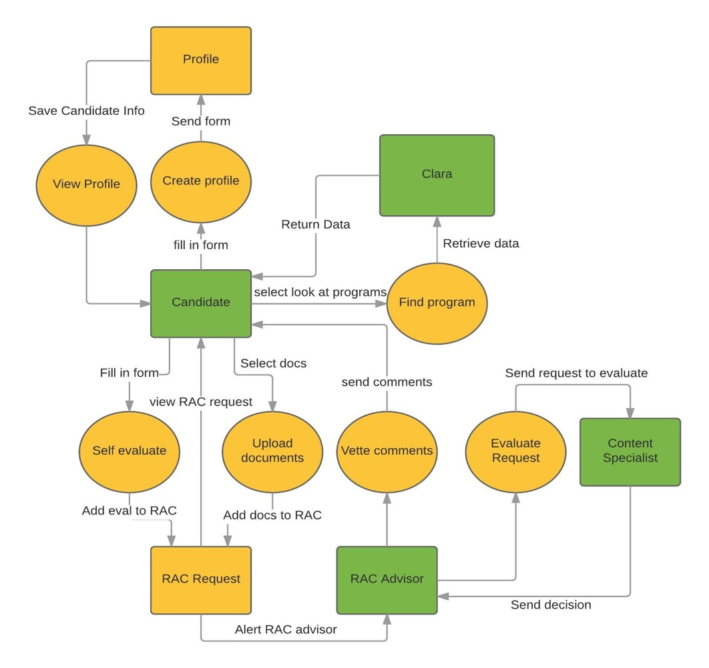

Author: Philip Dumaresq College: CÉGEP Heritage Program: Computer Science
The purpose of this website is to showcase the knowledge that I have gained
in my 3 years in the Computer Science program at Heritage College. It serves
to demonstrate that I have met all of the competencies and requirements that
satisfy the Program Exit Assessment and the program. It covers the areas of
Computer Science that we were exposed to in the program, and the key
industry skills learned in these disciplines.
The website is broken down into many different pages, each one that will
correlate to a different program objectives that I have met. Along with all
of this, my
resume
to briefly list the skills that I have acquired, along with my work
experience in the field.
The system that is being developed and used for this project is the RAC
system. RAC (Recognition of Acquired Competencies) is a system that was
requested by Alain Beauparlant, who is recognized largely as the co-op
coordinator for the school, but also helps deal with people who are coming
to Heritage with prior knowledge and experience in some of the programs
offered to help them get courses credited and receive a diploma from
Heritage.
The RAC system deals with getting people who believe they have many of these
credits already but they aren't recognized in Canada for example, and they
need to get their diploma. The RAC system helps people do this by getting
them to fill out everything that they know pertaining to the competencies
required by the programming and seeing where that individual student would
stand in terms of the program. This can give students advanced placement
within the program, or help students to receive the CÉGEP diploma.
This project is being managed by Richard Chan in our Development Project
course, starting in September 2017 and will be finished in May 2018. The
system is being developed by a team of 6 of us students, all of us acting
across all the systems, programming, and database portions of the project.
Applied Experience
Throughout my time at Heritage, I have had two excellent co-op experiences
over the summers. The coop program at Heritage is there to help students get
their foot in the door in this industry, gain connections and most
importantly have practical experience in the work force. These coop
experiences are what make the program so successful with it's employment
rate, and are invaluable to all of the students who partake in the
experience. The requirement for partaking in the coops is a minimum average
of 70% across all of your classes, and you must pass all of your Computer
Science core classes.
In my first co-op, I worked as a Computer Technician at Heritage College
from May until August 2016. While I was there, I worked with the college's
IT department to deploy a new virtual environment, which was a great
experience to expand my technical skills in IT. The work was largely done on
my own, with little to no supervision in my day-to-day tasks. I would go
around the college and install the new VDI software on all of the computers
in the college to deploy this new system, as well as act as IT support for
the members of administration who were at the college over the summer. More
about my first coop experience can be read in my
2016 Coop Report, which highlights
all of the main tasks that I was assigned.
In my second co-op, I was a junior software developer at TechInsights, from
May until August 2017. At TechInsights, I developed many smaller in-house
applications for the software and data management teams to use. These tools
we're written largely in PHP and JavaScript for the web based applications.
Parts of these tools were developed on my own accord, and therefore another
part of what I did was have brief meetings with members of the staff to show
them the progress made on their applications. Again, my
2017 Coop Report will go much more
into depth about the experience that I had working at TechInsights.
More of my work can be found on
my GitHub account. On my GitHub, I
have various applications that were created for assignments in school, as
well as a handful of personal projects that I'm working on myself,
including the Euler project and a Matrix calculator that I'm developing as
an expansion to an assignment.
Analysis
Architecture Analysis
The
original architecture analysis
was done in Development Project I before our teams ever began looking at
code. It compared WebForms to MVC, different approaches to the Entity
Framework and different methods of testing. For each of these, it made
recommendations on which practice we should adopt.
To determine the frameworks we would use for technical architecture, we had
to look at the requirements for the application. We settled to use the MVC
design with the Entity Framework for handling the data. These choices have
allowed us to build a dynamic web application where the data access has been
abstracted away from us, this way we don't have to focus on a lot of the
boilerplate code that's needed to get the each page up and running.
We chose to use the model first approach with Entity Framework since that
was the way we'd first learned how to create databases. Starting with the
model allowed us to make sure right from the start that we had a solid,
easily traversable database that would be quick and easy to update. In the
end, we would've chosen to switch to code or data first now, but we're
living with our choice.
For the testing of our system, we decided to stick to unit testing and
acceptance test driven development (ATTD). Unit testing is very objective,
result driven and quick to develop, while ATTDs ensure proper functionality
on our system deliverables and don't worry about how we do things in the
same way. We decided that these two types of testing were most important in
agile development when we only have 7 sprints to build the system.
Application Architecture
Our application works in a 6 tiered architecture. Our system is composed of
the typical 3 layers that you find in the MVC pattern: The model, view and
controller. The view comprises all of our presentation logic and
presentation of the data. The controller will handle passing the data
between the presentation and the business logic layer. The BLL is where all
of our business logic happens, utilizing the model and entity framework. The
model contains all of our business objects that are stored in the database.
Certain parts of the model also have an extra layer in between them, which
is the validation layer. The validation layer is a thin business object
layer that contains the rules for what certain business objects are allowed
to look like. These are the objects that are passed around in the front end
to ensure that no invalid data ever enters our BLL or our model. We also
have the database in the back-end which is our 6th layer, and is the data
layer of our application.
Project Trade-Offs
For this system we determined that the top priorities of the system were to
deliver the product on time, and make sure that the user experience of the
system was as good as we could make it. Since we could focus on making
certain parts of the flow as robust as we wanted before moving on to other
parts of the system, feature completeness was not much of a concert for us.
Budget was also not really applicable to the system's development. We did
however choose to place the ease of use of the system above it's quality.
Analysis Models
Our original class diagram was composed of just the classes required for the
Candidate flow. There was some lack of clarity in the original flow for how
the content specialist would work, and so there was a lot of things that
weren't included in the class diagram. We also didn't know about the mapping
between courses and competencies or about the RAC advisor needing to add or
modify programs, so new classes ended up getting added for both of those.

Statistical Analysis
The statistical analysis that was
performed for the program exit assessment was to observe homicides in Canada
and the United States. Observing these homicides, we looked at the total
number of homicides committed versus the amount committed with firearms and
then again versus the amount committed using handguns specifically.
To look at all of these statistics, we got our data from the FBI and Stats
Canada websites. Using the data tables gathered from these websites, we
analyzed the raw data and compared it using bar charts. We normalized all of
this data so that we could get a much more accurate representation of
proportions since the United States has a much larger population than
Canada. We also represented various parts of this data using box and whisker
plots to compare Canada to the US. Following that, we plotted out the data
in scatter-plots for Canada and the US to see the correlation to the number
of total homicides and the number of firearm related homicides. The
conclusion that was drawn was that the data indicated a very high
correlation between the number of homicides and firearm homicides in the US,
which could be an indicator of them having a gun problem. Following this, we
used relative frequency histograms of the data, we were able to create
confidence intervals for the number of homicides. Finally, we performed a
two-proportion z-test.
Ethical Analysis
One issue we have had to consider with our system is that it deals with
protected B data. Protected B data is that which if compromised can lead to
serious injury of the individual whom the data pertains to. Because of this,
we need to ensure that the security of our systems meets all of the
standards that should be followed through all layers of the system.
The people who would be impacted are the candidates in the system. As a part
of uploading documents to the system, candidates are often required to
upload transcripts or job contracts, which could contain information that is
private to the candidate and could be very bad for the candidate if the
information got out. To protect our users, we're using the Microsoft
Identities framework to ensure that we're using the best standard for
SP.NET security in web applications.
Communication
For the Systems IV course, we were required to write a research paper on a
topic of our choice. The topic that I chose to write about for mine was
programming language trends. In
my research report
, I discussed what some of the most popular languages in use today are,
and did a comparison of each of these languages. In terms of tangible
features, I looked at the speed of the language itself, the syntactical
similarities, and the paradigms each of the languages fall under in my
comparison. The other features I looked at were the influence they've had on
the industry, and other languages they've inspired or have been inspired by.
To perform my research, I began by thinking about what different questions
about my topic I'd like answered by doing this research. The big question I
wanted to ask was why there's so many programming languages floating around.
This is something that can be confusing to new developers, and a question
that most developers never ask themselves or ignore. Once I came up with the
questions I wanted answered, I went and looked up various articles that had
some sort of connection to the questions that I wished to be asking. I then
made a list of all the references that I found that I thought I might us. I
then finally thought about the order that these topics should be presented
in to have the most order and I began writing. After writing my research
paper, I chose some of the key points to that were made and turned that into
my presentation
on the research.
The conclusion to my report was that Heritage is currently doing a really
good job of achieving their goal of making students employable. While this
is great for the time being, I think that Heritage can do a better job of
making us good programmers in the long term. Languages come and go, so it
isn't as important, but the thinking will be the same. This can be done not
by teaching us how to use different programming languages but rather
programming across various different language paradigms. The report
concluded that shifts between programming paradigms is what's much more
complicated for developers because it requires thinking about things from a
different angle. Because of this, Heritage should adopt teaching functional
programming in a language like Haskell.
French
The program needs all of it's students to have a workable proficiency in
French as part of it's requirement to graduate. At Heritage college we have
all needed to take 2 French courses to satisfy this requirement. Living in
the Outaouais region, French is a very prominent language. It is the main
language of Quebec, the province that the school is located in, as well as
many of the government's offices and workers. As such, many people in the
area and many people who we will be working with in the future are going to
be Francophone, and we need to be able to accommodate and be able to have
professional communication in French.
As a requirement of the PEA, I have translated my
system overview in a
french version. The system
overview is a document outlining the RAC system. It discusses it's various
roles in the system and different workflows for each role. It also
describes how the RAC system fits in with the rest of the college's systems
as a whole.
Deployment
The installation procedure for the system is not complicated. Prior to
installation, you need to make sure that you have a target server for
both the application and the database. Once you have your target
application and database server, deployment is all doable through
Visual Studio 2015. To be begin, you Map and Get the solution, right click
on it, and click "Publish". Walking through these steps will deploy
you application to the target server. Once it's deployed, you'll need
to log into the server and configure it in IIS using AppPools and making
sure that the connection is set up properly. Back in VS2015, you'll also
need to open the .edmx file for the data model to create the database.
Set the target on the deployment scripts to the database server and
execute the scripts and change your connection strings.
The full installation guide can be found inside my
runbook.
Design
Databases Involved
RAC
The RAC database is the one that stores all of the key
information for processing RAC requests. It primarily stores the
RAC requests themselves, however it also stores all of the
information for the programs that exist in the system as well as
user data that is not available from the Microsoft Memberships
in CSAdmin.
Clara
This database is one that comes from the ministry of education and
will contain all of the information for the programs, courses and
competencies that exist at Heritage. It's used to pull in all of our
program data and store it in our database. The reason that we're
storing our own copy of this in our database is because we didn't
some of our tables pointing at foreign keys from tables that exist
somewhere entirely different.
CSAdmin
The CSAdmin database is the one that handles everything to do with
our system users. CSAdmin contains all of the tables for Microsoft
Memberships, so we pull our users from here and map them to our own
user types to add certain fields to them.
Physical Data Model
A physical data model is a diagram showing all of the tables in a database.
Data models are layed out so that you can see the relationships between all
of the tables in the database. Each of the table being represented in the
data model will have the name of the table, as well as the names of each of
the columns in the table. Data models also will have a way of defining the
differece between keys in the table, as well as required or optional
attributes.
This is the data model representing the database that is used by the RAC
system. While this is only one of three different databases used by our
system, it's the only one owned by the system.
Database Analysis
The three different ways of approaching Entity Framework are using the model
first, data first or code first approach. These 3 approaches are exactaly
what they sounds like they should be. When designing with the model first
approach, you design a data model and then Entity Framework will generate a
database and all of your business objects for you. When designing with code
first, you will write all of your business objects and have a data model and
database generated for you. The same follows with data first, where you will
generate your database and then a model and objects based off the database.
Each of these different approaches comes with various benefits and downfalls
and choosing which one to use can be difficult. Using a code first approach,
it means the developers never really need to touch the data or the database.
However, it also makes getting an understanding of how all of your classes
interact with each other a little bit more difficult. When regenerating your
database and data model after making changes in a code first approach, one
major disadvantage is that the data will get wiped out of your database.
The same goes for a model first approach. The advantages of model first are
swapped with code first. Here you need to know how to design databases and
know data modelling, but it makes it very easy to understand how efficient
your database is, how everything interacts, and how everything will tie
together. Finally there's data first, which requires having a solid
understanding of databases. It's definitely the farthest away from general
developers, but comes with the advantage of everything being exactly as you
want it, and being able to re-write your scripts so that the data in your
database remains persistent while you make changes. Each different approach
to Entity Framework has it's advantages and disadvantages.
In the RAC system, we used a code first approach to begin with. However, we
quickly saw the pitfall of not being able to truly understand our database.
Following this, we switched to using model first instead. Model first has
made it incredibly easy to make changes to the database by just adding
fields or tables as we chose and seeing how everything fits together.
Unfortunately using model first has also proven to be difficult to work with
since Entity Framework will wipe out our database every time a minor change
occurs. Model first also makes it difficult to make certain changes to the
auto-generated names that Entity Framework will give to things, which means
you really just need to bend to the will of the tool and work with it the
way it wants to be worked.
Database Access Paths
Candidate
The Candidate table is the most important table in the system because
really its what everything in the system revolves around. The candidates
tie everything to a user in the system so that you can track everything
for a given candidate. The Candidate table can be referenced from the
RACNotification table since notifications are tied to a specific
candidate, and the FinalizedRACContract is the same.
RACRequest
The RAC request table is the one that ties all of the core pieces for
the RAC request together. The self-evaluation is stored within elements
that cascade up into the RAC Request, which is then tied to the
candidate. Because the database is a series of composition relationships
flowing up into RAC Request and Program, these are two of the most
entities that hold everything together. RAC Request can be accessed in
the flow through the foreign keys into the Candidate table,
UploadedDocuement, Program, or RACRequestCompetency. All of these tables
will be able to reach into the RACRequest to see what the entire request
looks like.
Program
This table is used to link together all of the data for the programs
that are available in the system. This table is referenced by the
RACRequest table to indicate which program is being used for a RAC
Request. It's also referenced by the Competency and Course tables to
indicated all of the different part of the program. The courses and
Competencies are the two main components of programs at a college, and
so they're tied together by the Program entity. These programs are
directly visible on the ViewProgram view in the RAC Advisor flow.
Design Models
The system was designed following the Model View Controller (MVC)
architecture provided by Microsoft. As such, we’re using the default 3
layers that this provides us with, as well as some extra layers that we’ve
added.

The default layers to the MVC architecture that have been used are the
Presentation (View in MVC), the Presentation Logic (Controller in MVC) and
the Data Access layer (Model in MVC). We have also added the Business Logic
model, which handles the manipulation of data when it passes between the
Presentation and the data access, and we have added the database which
handles the storage of all of the data.
Designing the system with this layered architecture is important to the
development of the system for multiple reasons. The first reason it's
important to have a layered architecture like this is because having these
layers provides a loose coupling between the data in the back end and the
UI in the front end. When we make model changes, we'll always need to go and
change up our BLL and business objects, but the Views and Controllers don't
need to change much, if at all. Another reason it's important to have these
layers is because it makes the system more secure. Any data that's passed to
the UI will need to go through 4 layers of the system before it hits the
database, at which point there's many opportunities and places where data is
validated and santized.
Data Security Plan
The security plan will discuss the
security testing that bust be done on the RAC system for the Development
Project to ensure that the system is secure. The report will cover user
authentication, user authorization, encryption, confidentiality of data,
use of SSL on the server, privacy, database security, directory
manipulation, injection attacks, and testing techniques. Establishing a
security test plan for the RAC system will make the system more secure for
it’s users.
Implementation
One workflow of the system that I had a big contribution to in our system
was the account management portion. The account management workflow is the
sequence of pages that allow a user to see the personal information that
they've entered into the system such as their contact information and
address. This subsystem allows users to edit that information as well, and
change the program that they've applied to for their RAC requests. From
there, they can also proceed to delete their accounts.
To access this workflow, a candidate must first be logged into the system.
Once you've logged in, the "Account" link in the right hand of the menu bar
will direct you to a page where you can view all of your personal
information that was entered upon creating your account. At the bottom of
this page, there's another link called "Edit". If you click this, you'll be
brought to a new page with all of the same information that is now editable.
The email will not appear here because users cannot change their email.
From here, a candidate can edit any of the information and click the "Save"
button. There's also a link to where the user can change their password or
change programs.
If a user clicks the link to change programs, they'll be brought to a new
page with a drop down of all the RAC programs offered by the college. If the
user selects a new one and saves, then their current RAC request will be
deleted and replaced with a new one.
If a user clicks the link to delete their account, then they will be
prompted to confirm the deletion and if they do, their account will be
flagged as deleted and their email will be usable again. However, the
account information and RAC request will persist and won't actually be
deleted.
Below is a video explaining how this workflow is integrated and works in the
system.
Maintenance
Types of maintenance
Corrective
- A maintenance task used to rectify a fault in the system so that
it can be restored to a production ready state.
Adaptive
- Modifying a system to handle changing user or environmental
requirements.
Perfective
- Improving software during the maintenance phase to better the
performance, maintainability, security, etc. of the system.
Preventive
- Improving the software in a variety of ways such as increasing
security or doing refactoring to prevent future problems in the
system.
In our project, we are doing multiple different types of maintenance on our
system. We're doing adaptive maintenance by changing the whole system to C#
and MVC to meet the change in the program's language of choice. We're also
removing old functionality that's no longer required in the system. We're
doing preventative maintenance as well by adding the log in API for the
system. This will help not only our system have a simplified method of
logging in, but make all of the other systems have a simplified method as
well. Finally we're doing corrective maintenance to work out the bugs that
exist in the stored procedures that add new students to the system and
perform other business logic functions.
CSAdmin
CSAdmin is a system used exclusively by the Computer Science department
at Heritage used for managing the authorization for log in on all of
their other applications. CSAdmin serves to help manage the users in
Clara (administrative staff, teachers, students, etc.) who are able to
access different systems developed by students here at Heritage. Because
this is a system used for the Computer Science systems, the system has a
very small handful of users; currently the only one being Allan McDonald.
The goal of this maintenance project was to take the old VB CSAdmin system
and convert the language and framework that the system was built in. We
removed some of the old features of the system that were no longer relevant
and we're going to be adding some new features to it as well.
Modifications made
There was a handful of different changes that we made to the CSAdmin system.
The first of which was quite large, we changed languages in which the
system was written in; we changed from VB to C♯. We also changed
frameworks for the presentation of the system. The original CSAdmin was
written using .NET WebForms, and we have changed to be using .NET MVC.
We also ended up removing a lot of old functionality from the original
system. Everything to do with eCoop and lookups has been removed from the
old system, and we have added some things to replace it all. One thing
getting added is the ability to read in more users from active directory
to grab employees who don't exist in the Clara database. Another important
piece getting added to the system is a login API that will be used by
all of the systems to handle their authentication and authorization.
It will be tacked on as a web service accessible by any other system.
We are also taking all of the old stored procedures in the database and
converting them all into business logic in C♯.
Refactoring is the process of taking code that has already been
written and write it differently to improve the system in some way.
Refactoring is often done to improve the performance, modularity,
readability or maintainability of a system. The CSAdmin is being refactored
in a handful of different ways. A lot of the old VB code was quite
confusing to read through to figure out what was going on, and that mixed
with the large and complex stored procedures in the database had to go.
So while all of the code got re-written into C♯, a lot of it also
got modified to make it more understandable. The stored procedures also got
re-written into business logic as part of the refactoring.
Development Methodologies
The system was, as per college standards, developed under the agile
methodology. Our first sprint in the release ended up as a 6 week
iteration as opposed to the usual two week sprint; this was to make sure
we could get the initial language and framework conversion done in time.
In the future, we are doing proper 2 week sprints for the development of
new features in the system and for continued testing of the system's
features. On a day-to-day basis in the sprints, our team also does scrum
meetings at the beginning of classes to get our team organized. We got
over the standard sprint process, although our scrums are not typically
documented with meeting minutes or another alternative. Currently, the
bulk of the testing of the system is being done in unit tests, with no
formal system's tests being defined for the system up to this point.
Maintenance Team
The team that I'm working on for maintenance consists of 9 people
including myself. The team is:
Andrew Ha
Brae Walker
Guillaume Mercier
Jeremy Clarke
Martin Lurette
Philip Dumaresq
Thomas Plouffe
Troy McLean
Zachary Bridge
Working with a team of this size has been difficult. There is very often
people missing in class, there's always someone running late, and then we
need to coordinate everyone to do our sprints once everyone is there.
Because of this, we've been putting all of our tasks into TFS and claiming
them as they get added. Our method of allocating work has been pretty
all over the place because of this, but we've been good at keeping on top
of TFS and not stepping over each other's toes.
Process
Agile development is an iterative software development methodology that
focuses on close teamwork, client involvement and rapid development of a
system. An agile process will usually result in new releases coming out
every second week to keep a constant steam of new features, bug fixes,
and user acceptance. Agile development focuses on user acceptance of the
system above all else, and so in agile we use user stories to capture when
something has met the user's acceptance criteria before demonstrating it
to the client. A user story is simply a document that describes a basic
piece of functionality of the system. An example of a user story from the
RAC system would be "As a RAC advisor, I want to be able to add programs to
the system so that Candidates can register and evaluate themselves for the
program." We use these user stories to determine if that functionality of
the system works. The acceptance criteria can extend past the basic user
stories within the system. For example, if you have a user story for "As a
"
Agile development, being an iterative process, works in short cycles of
work called sprints. Sprints are usually 2 week cycles in which you
develop portions of a system and come to your user at the end of the cycle
to demonstrate what you have built. At the beginning of each sprint, teams
will get together to plan out how the sprint will go. This sprint planning
meeting will consist of looking at everything discussed in the client
meeting and determining what needs to get done in this sprint. This list
of work items is called the sprint backlog. The items that will go into
this sprint backlog will all come out of the product backlog, which is a
list of all of the features or work that need to go into the entire system.
At the end of each sprint, there is a retrospective meeting with the team
and they will discuss what well over the course of the sprint, what didn't
go well, and any lessons they've learned front the sprint. The purpose of
the meeting is to make sure everyone in the team communicates to try and
improve the overall quality of the software development team. At the
beginning of every day in a sprint, there's also a meeting called a scrum.
A scrum meeting is a stand-up meeting where every member of the team goes
around and says what they were working on the previous day, what they've
committed to working on that day, and anything that they happen to be
struggling with at the time. The purpose of the scrum meeting is to make
sure that everyone in the development team knows whats going on with
everybody else. This encourages transparent communication among all members
of the team.
Testing is an often overlooked part of development when following the agile
process because the cycles are so short. People often don't want to test as
much in agile because they're focused on pushing out new features and the
client won't see the results of your tests. So with the natural movement
away from testing in agile and the critical nature of it with such short
cycles before you ship the release, integrating testing is key. Keeping all
of your old tests up to date and creating new ones to match new features.
Agile development has been the most suited method for developing our
project thus far. Every single meeting with out client we end up learning
something new about how it's supposed to be, what kinds of changes we need
to make and new things to include. The scrum meetings have also been
instrumental in making sure everyone in the team knows whats going on with
each other so that we aren't stepping over each other all the time.
One disadvantage to Agile development is that there isn't much documentation
that goes along with it. The documentation in Agile development resides
largely in the user stories, acceptance criteria and maybe a handful of
diagrams. Because of this, when new developers come onto a project, they
are't
Project Managment
In developing this system, we use product and sprint backlogs to determine
what all still needs to be done in the system. The product backlog contains
all of the product backlog items (PBIs), that eventually need to be built
into the system. Each of these PBIs is prioritized, sized, and then
organized into sprints. We decided the priority with the client, and then
we take things one sprint at a time. At the end of each sprint, there's time
to change the priorities of PBIs, leading to changes in the next sprint. The
sprint backlog is like the product backlog, but only contains the PBIs that
we'll be aiming to accomplish in that sprint.
This is the product backlog for
our system.
The sprint planning meeting is very important to the agile process. In the
sprint planning meeting we finalize our goals for the sprint and size each
of the PBIs using some of the estimation strategies learned, and then size
each of the individual tasks accordingly as well. This allows us to develop
a sprint burndown chart and estimate if we can meet our final goals for the
sprint. We use the burndown chart created from this to manage our work
throughout the sprint to make sure that we reach all of our goals and that
we're working at a consistent velocity. Across the x-axis of the burndown in
the time remaining in the sprint, and along the y-axis is the amount of work
left to do in the sprint. The line of best for for this is a straight line
from the top-left to the bottom right, indicating a steady workflow
throughout the sprint.
Here is an example burndown chart from our first sprint of Development
Project II:
The burndown chart and PBIs are all being stored in a tool called Team
Foundation Server (TFS). TFS allows us as a team to track what work we need
to do throughout our entire system, what we need to do each sprint, and
allows us to track our velocity throughout the sprint. It's a very useful
tool to make sure that we all stay on track throughout the course of
development.
Another important part of the agile process is the daily scrum meetings. The
scrum meetings are a brief meeting at the beginning of the day where
everyone on the team answers 3 basic questions:
What did you do since the last time we met?
What do you plan on doing now?
What issues are you encountering right now?
The purpose of this is to make sure everyone in the team knows where
everyone else is at. This way you can plan your own work accordingly if you
need someone else to do something first, or just to make sure that no one on
the team is stepping over each other's feet and making sure that the same
work isn't getting done multiple times over.
Requirements
The RAC (Recognition of Acquired Competencies) system is being implemented
to replace the current paper system being used by Alain Beauparlant. The
RAC system is one that allows people who have education or work experience
in a specific field to get that knowledge recognized. For people who are
immigrating to Canada for example, they might have education from a college
or university that isn't recognized here, and the RAC system can help them
gain recogniztion for what they know. This doesn't automatically give
students a diploma, but it allows them to get an advanced placement in the
program that they've applied for.
Elevator Pitch
The system's primary user is going to be Alain Beauparlant, who is the
RAC advisor and the administrator for the system. Other users for the
system include candidates who wish to apply for the RAC process, and
content specialists who will be given candidate profiles to evaluate their
level of competence throughout their self assessment. The system
communicates with CSAdmin currently to authenticate college internal users.
These users include Alain Beauparlant, and some of the content specialists.
The content specialists can also be external to the school systems however,
since they can be professors at other colleges. The system will also
communicate with it's database that currently sits in CSDEV, but will be in
CSProd once the system is deployed to production. Finally, the system will
also communicate with the Clara database as well.
The main function of the system is for potential candidates to sign up for
the system, and then go and evaluate their skill in the competencies
required for the given program. They're given a list of all the
competencies and they can then go and say wether or not they can fulfill
the requirements for it, providing comments and documents to prove their
knowledge. The RAC advisor can then go and defer the candidate's profile to
a content specialist who will be able to evaluate whether they think the
candidate is indeed able to do what they claim to be able to do. These
evaluations are then compiled together and the candidate is told where they
stand for each of the courses in the program.

A business requirement is one that provides the some kind of value to the
system owner. These business requirements are delivered in many different
ways in companies, but for us they're being delivered through the software
functionality. Business requirements are akin functional requirements in a
system, whereas non-functional requirements are those that specify metrics
for example of how a system should be able to do something. For example, a
non-functional requirement for the RAC system is that the password must
adhere to the Heritage college standards for such, and a functional
requirement is that a user needs to be able to upload documents to their
profile. Functional requirements are captured in the user stories and
acceptance criteria in our backlogs. The user stories describe different
functionalities that the system must be able to do to provide that value,
and the acceptance criteria is what needs to be met for the system owner to
be able to say yes, the system does meet those requirements.
The user generates the business requirements for the team throughout the
course of the development of the system. During the first meetings with the
user, they'll define the outline of what the system they'd like is, and we
go and create formal user stories based off of this. They also continue to
create new business requirements throughout the development of the system
by requesting additions to the system during user meetings. In these
meetings, we show the clients what we've done to build the system so far,
and they will tell us what they want added or changed if it's things that
they haven't defined for us already. This way the clients stay involved
over the whole course of the development of the system using agile.
Examples of where out client has added new business requirements can be
found in any of our meeting minutes from the initial meetings with Alain
or from our subsequent client meetings at the ends of our sprints:
In the development project classes we worked in small teams of 6 people to
develop our system. These team was sized based off of the ideal team size
range that we learned in our systems class. The class also split evenly into
3 separate teams, which is convenient. In our development team, the work was
decided largely based off what everyone else in the team has really worked
on before. The first sprint kinda set the pace for a lot because we worked
on sections of the system that we were familiar with continuing on from
there.
The team that I worked on consisted of
Andrew Ha
Brae Walker
Cody Berube
Louis Thibodeau
Maxwell Haley
Myself
Working this team in the development project class was a really good
experience for really developing skills at working in a development team.
The team sized were much more realistic than anything we've had before, and
it gave it a very different dynamic to much of what we've experienced
before. The team was balanced in differed opinions and it made for some real
life challenges for our team to overcome.
One advantage to this team is that for the most part, we are all people with
strong technical and soft skills. We tend to communicate effectively to each
other most of the time, and manage to get out work done in our sprints. We
all feel comfortable raising issues with each other about our work, or
anything that we feel is off in the team. We also have a good balance of
different opinions on our team, which leads to good discussion about the
direction we should take things or the best way to overcome technical
difficulties. Cody is also often an excellent moderator in these situations,
and is able to keep drawing us back to the discussion. Another good thing
about my team is the besides the positive work dynamic and strong skills, we
all get along well. We're all people that get along pretty well and
generally enjoy each other's company, outside the context of the development
project. I feel like this also helps us to be a stronger team.
One disadvantage in our team is that we have a lot of people who are easily
sidetracked in a discussion. We often go very distracted by things that
weren't as relevant to the discussion and spent way too much time working on
them. It was difficult sometimes to draw ourselves back to the main
discussion points. This was partly because our team was very technical, and
we don't collectively spend enough time looking at big picture aspects of
the system. We would often get stuck thinking about some of our analysis in
Development Project I because we dug right into the technical details of it
before fully hashing out our plan. This resulted in us again taking too
long in our discussion.
Test
Unit testing was not a huge part of our system development as we were
usually far more concerned with trying to push out features for our client.
As with the rest of the system, the unit testing was done as part of our
usual sprints, and we had unit testing tasks assigned throughout our
sprints. However, due to the amount of changes to our database and the
frequency with which things changed for us, our unit tests frequently became
very quickly out of date and we did not put in the effort to keep on top of
them. After the end of the 4th sprint, we put in more time to unit testing
to get everything we'd done fixed to try and get our unit tests passing
again.
Types of Testing
Functional
Functional test cases are to determine how different parts
of a system to work together to ensure that the functionality
of the system works as a whole. Functional tests determine
if the workflow as a whole if functional or not and ensures
things work in a very true or false way: yes this was the
expected outcome of this operation or not.
One example of a functional test case that was performed was
ensure that users are capable of uploading any document that
was less than 10MB. To test this, I tried testing the upper
bound of 10MBs, as well as just over and just under to ensure
that the correct documents could be uploaded. The only "issue"
encountered was that 0kb documents could not be uploaded,
which should never really matter anyways.
Usability
Usability test cases are UI based tests to figure out how easy
the system is to use. They look at things like the consistency
of styling to make sure that your headers are all formatted
alike or that you've got the same style for all of your primary
actions and other consistency insurances. It in general makes
sure that your system looks and feels professional and there's
no parts of it that are overly complex to use.
One of the usability tests that was looked at was making sure
that all of the pop-ups in the system follow the same styling.
We have our own pop-ups that don't use jQuery or bootstrap
styling, so we need to make sure that it's used instead of
alternatives.
Compatibility
These types of tests determine the compatibility of a system
across various different platforms. These ensure things like
browser compatibility, mobile friendliness, network
accessibility, etc. These are to ensure that the system would
work under any environment, regardless of operating system,
browser, screen size, method of connecting to the internet, etc.
The browser tests that I ran on this included testing against
Safari, which included an OS compatibility test as well since
it's only on OSx. On Safari, quite a few issues were found with
file uploading being a major issue and the scroll buttons
sticking to the bottom of every page.
Security
How secure is the system? Is the system vulnerable to various
methods of code injection? Are there authorization issues with
users accessing each other's accounts, or changing URLs to
access various roles? Is the data sent between the client and
server in a secure manner? I.e not sending all of the data in
a query string. I executed SQL injection tests, XXS tests,
file truncation, and URL manipulation
To test the security of the system, one of the penetration
testing techniques I tried was URL manipulation. I tried
logging in as a Candidate and changed the URL to be that
of a page only the RAC advisor can access, and tried seeing
if the RAC advisor could access anything of the Candidates.
I also ensured that someone who was not logged in could not
see these pages.
Business Cycle
Do the core business transactional effects take place? Over the
course of time, does your system retain it's changes? If the
system's back-end doesn't get touched for a few years, will the
system still be clean and usable, or will it get cluttered and
confusing?
For example, one of the business cycle tests that I tried was
ensuring that if a candidate deletes their account, then their
email address is going to get freed up for someone else to be
able to use in the future.
All of the testing that was done on the system can be found in my
test report for the system. This
document includes various different system tests that were executed on the
system. This document contains the
results of each of the tests that were run against different versions of
the system.
Training
The training for users of this system comes from two different places:
the online user help that is accessible from anywhere in the system,
or from the training videos that were provided. The online help contains
sections for each of the different workflows through the system and
contains step by step instructions on how to do things while explaining
how each workflow integrates into the rest of the system. The videos
provide step by step walk-throughs of how to use each of these workflows
as well, coving the same topics as the user help, but through videos so
they target people who learn in different ways.